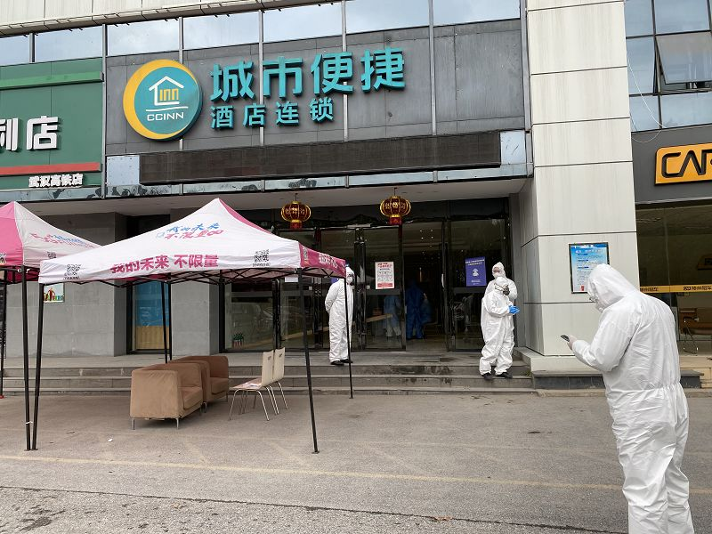

“封城”一月：武汉生活图鉴
原文链接 备份链接 经历整整31天的艰难考验之后，武汉疫情防控已经从无序走向有序，但千万居民的生活从无序到有序才刚刚开始，这个疫情核心区的社会经济生活全面恢复，还面临很多挑战 2020年2月11日，武汉市洪山体育馆武昌方舱医院，社区工作人 …

出院——隔离——回家，越来越多人走在这样一条重回阳光下的道路上。最后的战役已经打响，所有人都还需要站好最后一班岗
***********刘以秦 | 文***********
*************************谢丽容 | 编辑*************************

解除隔离回家的武汉市民正在小区门口接受体温检查。
3月1日下午，慕江睿走出隔离酒店，外面是阴天，他却感觉看见了阳光。他和父母三人在武汉火车站附近的城市便捷酒店隔离了11天，去酒店之前，已经自行在家隔离了11天。
房间在二楼，打开窗户外面是一堵墙，看不见太阳，只能从天气预报和新闻里了解外面的情况，父母就住在隔壁，但也不能见面。
隔离期本应14天，由于体温正常，连续两次核酸检测均为阴性，他和母亲接到通知，可以回家了。父亲还未接到可以解除隔离的通知，重见阳光还要几天。
短短11天，这段日子有些恍惚。 2月7日，他的外婆因为感染被送到医院，直到2月17日去世也没见上最后一面。悲伤与隔离通知同时到来，他和父母属于“确诊患者密切接触者”，是“四类人员”之一。
慕江睿是这个酒店第一批解除隔离观察的人员。酒店离他家不远，十几分钟车程就能到。社区书记在小区门口迎接，工作人员给他们量了体温，走进小区的封锁门，慕江睿回归到当下武汉居民的“正常生活”——可以出门拿快递、外卖，不能出小区。
社区书记告诉《财经》记者，他们还有8位正在隔离的“密切接触人员”、30多例疑似病例以及十几名确诊正在住院的病人居民，接下来的主要工作就是从隔离点陆续接回他们。从1月23日武汉封城开始，她一天都没休息过，经常熬夜没时间睡觉。
回到社区的人们比去到医院的更多，这无疑是一个大好消息。武汉疫情蔓延终于得到了初步控制，3月2日，武汉累计确诊人数49315人，较前一天增加193人。社区工作仍然不敢放松，社区书记说，武汉人常说的一句话是，“都喝了一江水了，还差这一碗吗？这就是我们现在的心情，站好最后一班岗。”
“可以去阳台上晒晒太阳”

工作人员在隔离酒店门口，等待解除隔离的居民
3月1日下午，社区志愿者司机杜川接到消息，他需要去武汉火车站附近的隔离酒店，接解除隔离的社区居民回家。
杜川有些紧张，他告诉《财经》记者，“要上战场了。”这是他第一次接到这样的任务，此前需要被隔离的居民，都由社区统一安排，公交车运送。他的车上也安装了隔离防护膜，将司机与后排乘客隔离开。
下午5点，慕江睿与母亲走出酒店，门口的工作人员给他们进行消毒，杜川还不放心，上车前，再次用酒精喷洒了一遍。
慕江睿是武汉人，在快手公司上班，疫情期间虽然一直处于隔离状态，但他仍然在家办公，“一天工作11个小时，做一休一。”公司也给他送了口罩酒精等防护物资，每天关心他的生活状况。
2月初，外婆出现身体乏力的症状，外婆一直有糖尿病，他们以为这是血糖升高导致的。送去医院做了检查后，确诊为新冠肺炎，“我们都不敢相信，因为外婆没有任何网上说的那些症状，没有发烧、咳嗽、呼吸困难。”慕江睿回忆道。
2月7日，慕江睿的外婆住进了武汉中南医院，随后又转到武汉市第三医院，这是他们所在的社区对口的定点医院，由于是确诊病人，家属不能探视，他们也不知道外婆后续治疗情况如何，2月17日，收到通知外婆去世。来不及悲伤，慕江睿一家人就被送进了隔离点。
生活总是要继续。作为一名在互联网公司上班的年轻人，工作离不开互联网，生活也离不开。走出隔离酒店时，他的手里拿着一瓶叫外卖送来的可乐，考虑到回家后可以拿快递了，他提前在网上买了一台新手机。
隔离的11天里，除了工作，别的时间他用来看电影，玩游戏。他的母亲的生活状态要无聊得多，她告诉《财经》记者，每天不知道要做什么，只能在酒店房间里来来回回地走，就当运动了。她说，“现在可以去阳台上晒晒太阳了。”
隔离酒店里，工作人员送来一天三餐，同时记录体温，住宿和吃饭的费用全免，午饭和晚饭都有3-4个菜，每顿都有肉，慕江睿评价，“吃得还是很好的。”
慕江睿重获自由的前一天，另一位武汉市民汤非离开方舱医院，进入隔离点，隔离观察14天。汤非2月6日入住武汉洪山体育馆方舱医院，核酸检测已经连续两次阴性，不出意外，他很快也可以解除隔离。
汤非的外婆也因为确诊新冠肺炎住院，目前核酸已经转阴，很快也能出院。
出院——隔离——回家，越来越多人走在这样一条重回阳光下的道路上。武汉市民孙新月的父亲因肺部感染，1月31日住进荣军医院，恢复得很好，2月25日出院去酒店隔离，预计3月8日可以解除隔离。
“站好最后一班岗”
3月1日下午，武汉市硚口武体方舱医院宣布即将“休舱”，不再接收患者。当天，34名康复患者出舱，76名患者将进行转诊处理，这是武汉市首个“休舱”的方舱医院。入驻硚口武体方舱医院的山西救援队医护人员待命，救援物资和设备进行封存，原地待命。
上海华山医院此次负责支援武汉洪山体育馆方舱医院，洪山体育馆里共有800个床位，华山医院副院长马昕告诉《财经》记者，目前已经有很多病人陆续出院，病情变重需要转诊的病人大约有10几名，远低于治愈出院的数量。
此外，上海华山医院还支援了武汉3家定点医院，马昕说，定点医院的情况也在好转，住院病人数量持续减少，但危重病人还需要持续治疗。
武汉市第五医院的医生也告诉《财经》记者，该医院已经治愈出院了十几名病人，此前五医院收治的大部分都是重症病人。
随着病人陆续出院，隔离点征用工作也在发生变化。武汉市文旅局的一位工作人员告诉《财经》记者，他们正在征用新一批的酒店，此前征用的酒店主要用于外地救援队的住宿、疑似病人和密切接病人的隔离，以及滞留人员的安置。
“因为现在有很多病人要出院了，都需要再找地方隔离观察。”他说，“形势在变好。”
2月2日，武汉市新型肺炎防控指挥部发布第十号通告，对“四类人员”集中收治，包括确诊患者、疑似患者、无法明确排除感染可能的患者和确诊患者密切接触者。
自2月2日起，集中隔离、收治工作全面展开，2月3日，武汉市动工改建国际会展中心为“方舱医院”，用于收治轻症患者，之后陆续建成使用16座方舱医院；2月4日，火神山医院开始接收病人；2月5日，湖北疫情防控指挥部下令：确保疑似和确诊病例应收尽收；2月8日，雷神山医院交付。
截止目前，武汉市新冠肺炎床位从5000多张，增加到23000张，方舱医院实现“床等人”，全国各地共派出330多支医疗队，超过4万名医护人员支援湖北。
司机杜川随时待命，接下来他还将陆续去各个隔离点，接回解除隔离的居民。如何有序、安全的接回这些解除隔离人员，需要提前规划。同一个隔离点，可能住着来自不同社区的居民，杜川接到社区党政办通知称，“各社区正在接回解除人员，应错峰安排，免得打乱仗，效果不佳。”
全国抗击新冠疫情工作已经进入关键收尾阶段，3月1日，全国31个省（自治区、直辖市）和新疆生产建设兵团报告新增确诊病例202里，湖北省新增196例，湖北以外地区单日新增病例数6例，湖北以外地区已经连续4日新增病例为个位数。全国累计现有疑似病例已经降至1000人以下，为715例。
社区在抗击疫情工作中承担了重压，对于被隔离的居民和社区工作人员来说，武汉抗疫最后的战役已经打响，所有人都还需要站好最后一班岗。
作者为《财经》记者


**作者：刘以秦
**
微信：biaomei001
*欢迎交流~*
*加微信请注明 *
*姓名、公司、职务*


责编 | 蒋丽 lijiang@caijing.com.cn

原文链接 备份链接 经历整整31天的艰难考验之后，武汉疫情防控已经从无序走向有序，但千万居民的生活从无序到有序才刚刚开始，这个疫情核心区的社会经济生活全面恢复，还面临很多挑战 2020年2月11日，武汉市洪山体育馆武昌方舱医院，社区工作人 …
原文链接 备份链接 这段时间，生活乱糟糟的，整天不是担心这个就是害怕那个，三个亲人隔离，我一个人带着两个娃度日，本来可以是悠然的居家时光，却因为疫情让我这个家步履维艰。 口述 | 叶子（化名） 整理 | 黄祺 今天是我33岁的生 …
原文链接 备份链接 伴随着火神山、雷神山医院开始收治病人，15家方舱医院陆续启动， 各省医疗队开赴武汉，武汉所有确诊患者与疑似病例都将“应收尽收”。 在人类抗击疫病的历史上，“武汉会战”已成为一场史无前例的超级行动 图/新华、中新 武汉 …
原文链接 备份链接 经济观察网 记者 高歌 在过去的24小时里，陈赟经历了从社区隔离点拉去方舱医院，又因血氧量低不予接收，原路而返的周折。 “我的东西都被踩烂了，被子都丢了，没有力气搬了，”今年55岁的武汉市民陈赟核酸检测结果为阳性，2 …
原文链接 备份链接 2 月 9 日下午，在被方舱医院「退回」4 天后，刘俊一家被街道居委会通知，当日会安排车辆送其父母入院治疗。 在此之前，经历了数日的网络求助，刘俊一度感到入院无望，特别是在父亲退烧后，几乎接受了无法入院治疗的事实。对于 …